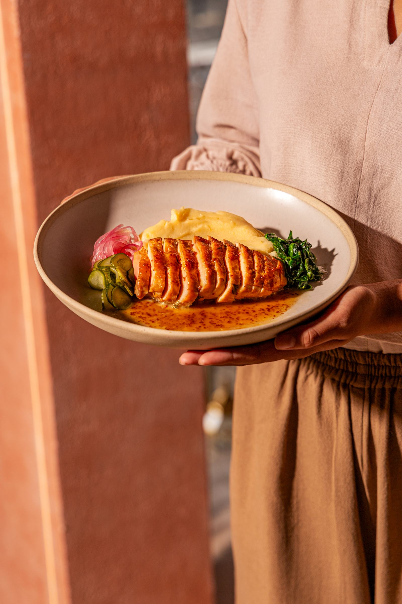

The Chef · SILK CangguШеф · SILK Чангу
Maxim
Fomenkov
Head chef. Trained in Uzbekistan, sharpened in Moscow, cooking in Canggu.
He learned plov where it is argued about, and learned service where it is measured. SILK is the first place he has had both at once.
Максим
Фоменков
Шеф-повар. Учился в Узбекистане, оттачивал в Москве, готовит в Чангу.
Он узнал плов там, где о нём спорят, и узнал сервис там, где его измеряют. SILK — первое место, где у него есть и то, и другое сразу.
PhilosophyФилософия
I cook cuisine with emotion, atmosphere and identity — where every ingredient and every spice tells part of a larger story.
Я готовлю кухню с эмоцией, атмосферой и характером — где каждый ингредиент и каждая специя рассказывают часть большой истории.
Maxim FomenkovМаксим Фоменков
Three kitchensТри кухни
-
UzbekistanУзбекистан
Where it beganГде всё началось
Kazan, tandoor and the unwritten rules of plov — learned in kitchens where nobody writes anything down.Казан, тандыр и неписаные правила плова — выучены на кухнях, где ничего не записывают.
-
MoscowМосква
Where it was testedГде это проверялось
Full rooms, hard standards, restaurants that open and close in a season. Discipline came from here.Полные залы, жёсткие стандарты, рестораны, которые открываются и закрываются за сезон. Дисциплина — отсюда.
-
BaliБали
Where it is nowГде это сейчас
A room he designed the menu around, not the other way around. The first kitchen that is entirely his.Зал, вокруг которого он построил меню, а не наоборот. Первая кухня, которая целиком его.